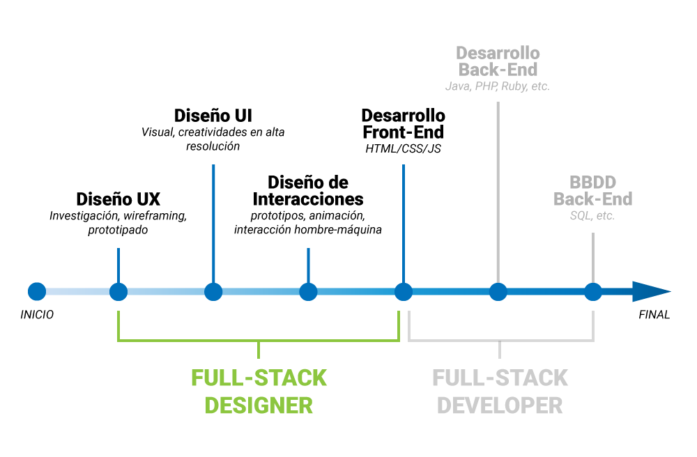

El mundo tecnológico cada vez crece y cambia más, en especial el mundo del desarrollo y del diseño, donde este crecimiento y estos cambios en la forma de trabajar requieren siempre de nuevas habilidades y especialidades. Ahora, dentro del ámbito del diseño, ha surgido una nueva faceta, el Full Stack Designer.
¿Qué es un Full Stack Designer?
No hace mucho, los diseñadores y los desarrolladores tenían roles claramente definidos. Sin embargo, los tiempos han cambiado, y cada vez más diseñadores han ido asumiendo tareas de programación y diseño al mismo tiempo. Así que, aplicando la misma lógica, un Full Stack Designer ¿sería un diseñador que programa? ¿Un programador que diseña? ¿Ambas cosas a la vez?
Full stack no significa hacerlo todo ni hacerlo a la perfección. El concepto se refiere específicamente a una persona que posee conocimientos en diferentes áreas y es capaz de usarlos para completar de forma independiente el desarrollo de un diseño o producto.
Esto significa que un Full Stack Designer puede hacer la conceptualización básica de un proyecto y completar todo el diseño y las tareas relacionadas con el desarrollo, como el diseño de los mockups y prototipos, el diseño visual, la maquetación y programación HTML/CSS3, JS / jQuery, etc.
Ventaja de ser un Full Stack Designer
El enfoque global es la principal ventaja de un Full Stack Designer, y la característica que lo diferencia de un diseñador especializado en una sola faceta del proyecto. Contar con alguien capaz de participar en cada fase del proceso de diseño y que posee el conocimiento necesario sobre su implementación técnica aporta un gran valor añadido a cualquier equipo de desarrollo. Y, en el caso de los diseñadores freelance, supone para sus clientes la garantía de haber elegido a un profesional fiable y competente, conocedor de las tendencias en diseño y de las más actuales herramientas y tecnologías.